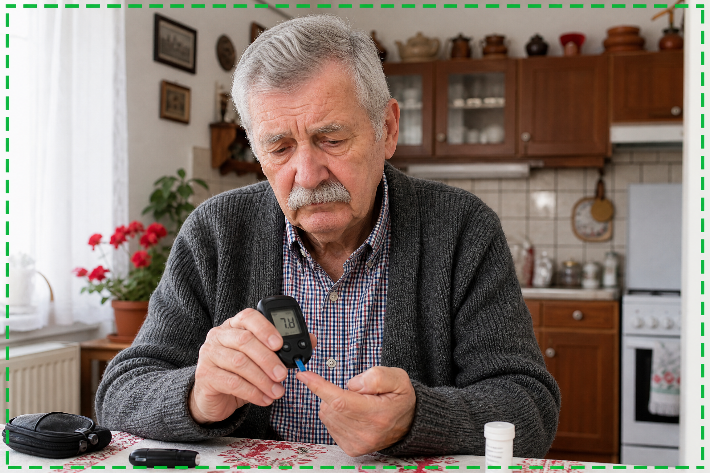
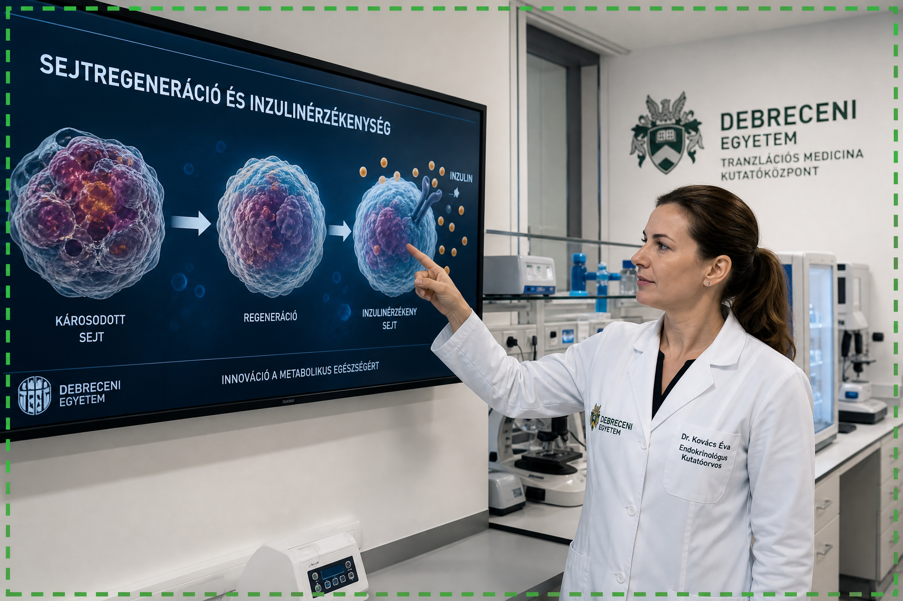

Egy budapesti kutatócsoport, Dr. Kovács Éva vezetésével, áttörő felfedezést tett a cukorbetegség kezelésében. Évekig tartó intenzív kutatás után azonosították az inzulinrezisztencia valódi gyökerét, ami a magas vércukorszint fő oka. Ez a felfedezés új utat nyit egy innovatív megoldás felé, amely ígéretesen helyreállítja a sejtek inzulinérzékenységét természetes módon.
FEDEZZE FEL A MEGOLDÁST
Sokan úgy gondolják, hogy a cukorbetegség elkerülhetetlen az öregedéssel. Azonban kutatásaink, amelyek a legmodernebb debreceni laboratóriumokban zajlottak, azt mutatják, hogy a probléma gyökere a sejtek inzulinrezisztenciájában rejlik. Ez azt jelenti, hogy a sejtek nem képesek hatékonyan felvenni a glükózt a vérből, ami magas vércukorszinthez vezet. Ennek a folyamatnak a megértése és korrigálása a kulcs a stabil vércukorszinthez.
Képzeljen el egy életet, ahol energikusnak érzi magát, nincsenek vércukorszint-ingadozásai, és újra élvezheti az ételeket anélkül, hogy aggódnia kellene. Ahol a teste újra harmóniában működik, és visszanyeri függetlenségét. Ez a valóság azok számára, akik már profitáltak ebből a magyar felfedezésből. Ez nem csupán a vércukorszint javulása, hanem az életminőség teljes helyreállítása.
NÉZZE MEG, HOGYAN MŰKÖDIKEzen felfedezések alapján egy speciális protokoll került kifejlesztésre, amely közvetlenül a sejtek inzulinérzékenységének helyreállítását célozza. Ez a protokoll természetes összetevőket és fejlett technikákat alkalmaz, hogy segítse a sejteket visszanyerni optimális működésüket, lehetővé téve a stabil vércukorszintet és a hosszú távú egészséget. Ez a magyar élvonalbeli kutatás eredménye, kombinálva a sejtbiológia mélyreható megértésével.

Készítettünk Önnek egy exkluzív videó prezentációt, amelyben Dr. Kovács Éva és csapata részletesen elmagyarázza ezt a forradalmi megközelítést. Ez az információ lehet a legfontosabb, amit idén kap. Kattintson az alábbi gombra, és nézze meg a prezentációt most.
NÉZZE MEG A PREZENTÁCIÓT MOST